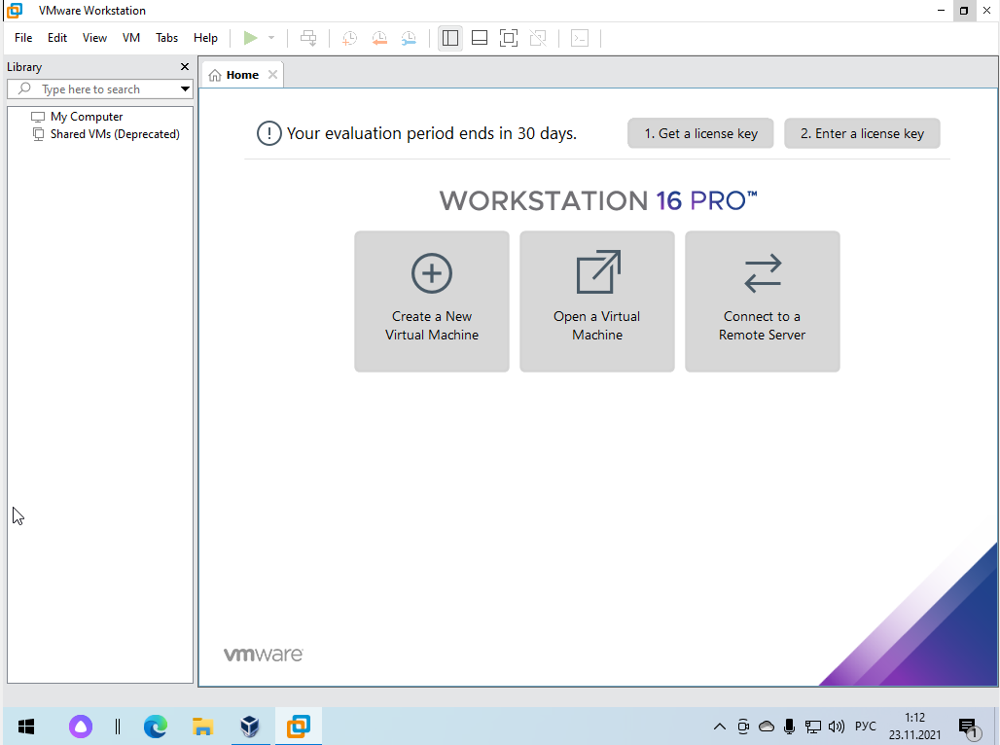
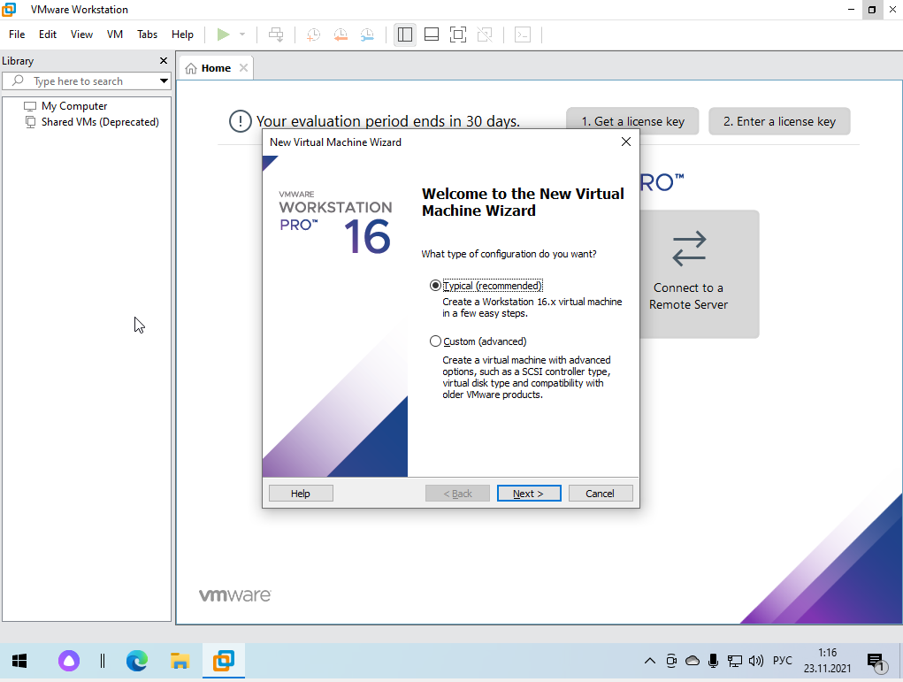
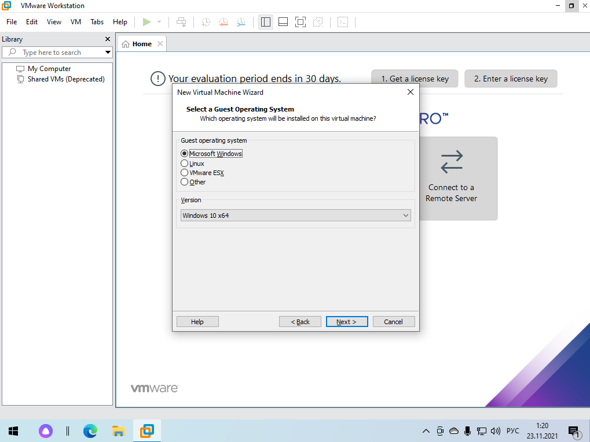
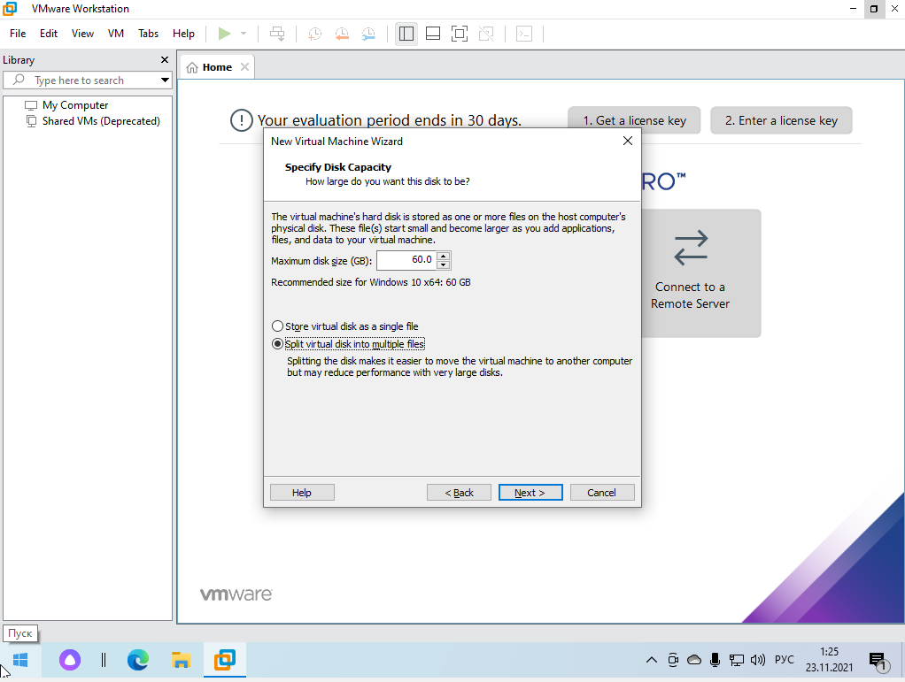
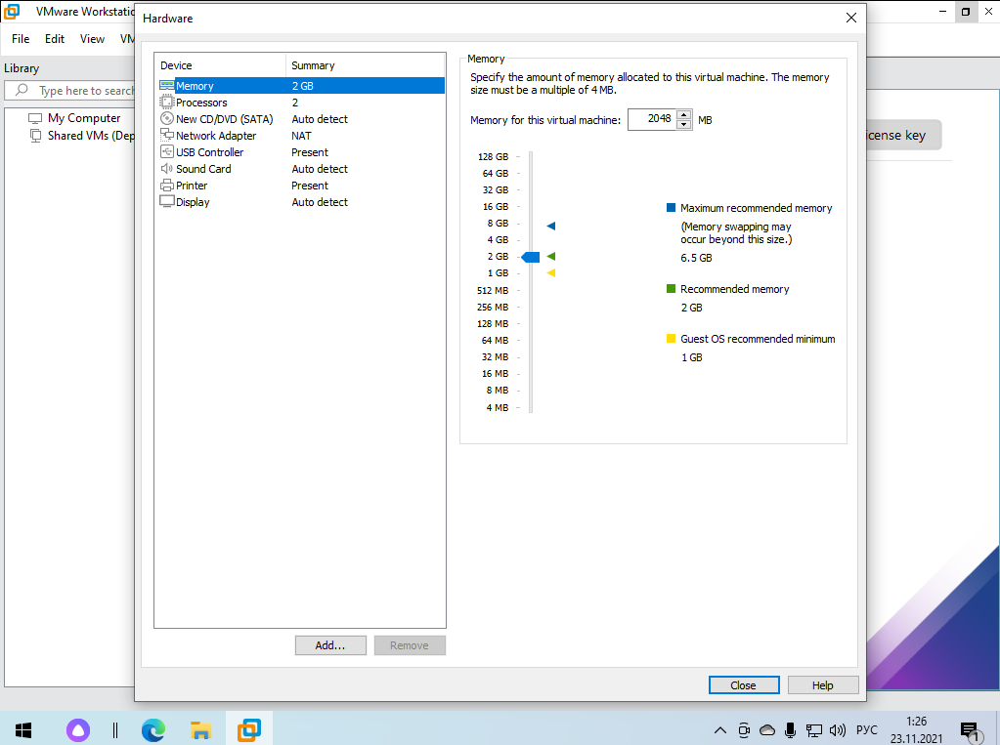
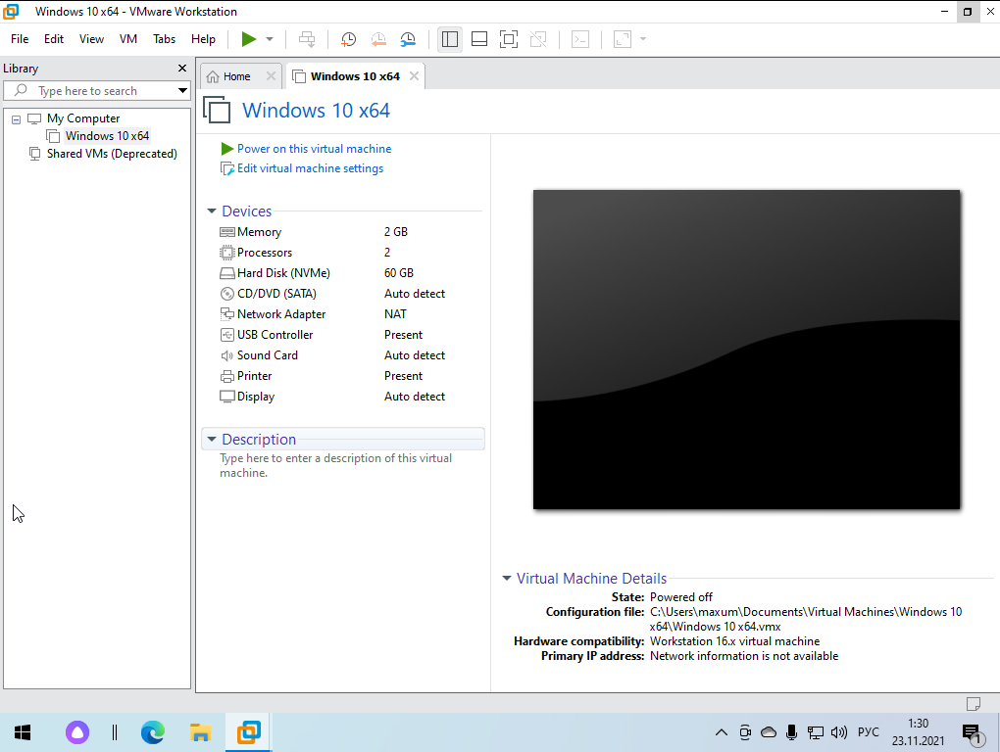

VMware Workstation Pro - это гипервизор, работающий в версиях x64 операционных систем Windows и Linux (предыдущие выпуски имели версию x86-32).
Он позволяет пользователям создавать виртуальные машины на одной физической машине и использовать их вместе с хост-машиной. Каждая виртуальная машина имеет свою собственную операционную систему для запуска, включая версии Microsoft Windows, Linux, BSDи MS-DOS.
VMware делает установку системы намного проще, здесь больше настроек для виртуальной машины, шаблоны для различных операционных систем, которые могут быть установлены автоматически.
Основные возможности:
- Автоматическая установка систем по шаблону
- Детальная настройка оборудования, включая настройку ID процессора, произвольного количества видеопамяти и других параметров;
- Простая настройка виртуальной сети между машинами
- Улучшенная поддержка графики и DirectX 10, можно играть в игры
- Поддерживается шифрование диска виртуальной машины через VBoxExtensions
- Более полная реализация BIOS и поддержки EFI
Рассмотрим интерфейс и основные функции программы.

Нажимаем на кнопку "Создать новую виртуальную машину". Программа предлагает выбрать тип конфигурации: обычный или выборочный. Обычный тип предоставляет возможность выбора шаблоны.

После выбора типа конфигурации программа запрашивает ISO-файл. Есть возможность выбрать установочный диск, путь к ISO-файлу или установить операционную систему позже.
Далее нам необходимо выбрать тип и версию операционной системы.

Задаем имя и задаем путь хранения нашей машины, нажимаем кнопку "Далее". Программа предлагает задать размер диска. Рекомендуемый размер для Windows 10 x64: 60GB.

После того как мы указали размер диска, программа предлагает задать настройку оборудования, это позволит более тонко подстроить параметры для виртуальной машины.

Нажимаем кнопку "Готово", и нас встречает главная страница созданной виртуальной машины.

После загрузки нужного ISO файл, нас будет приветствовать стандартный экран загрузки системы, а впоследствии активация системы.